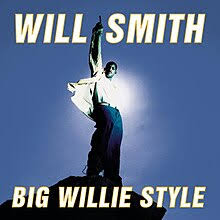
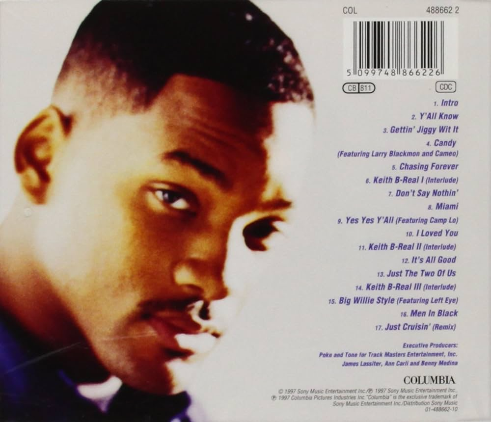
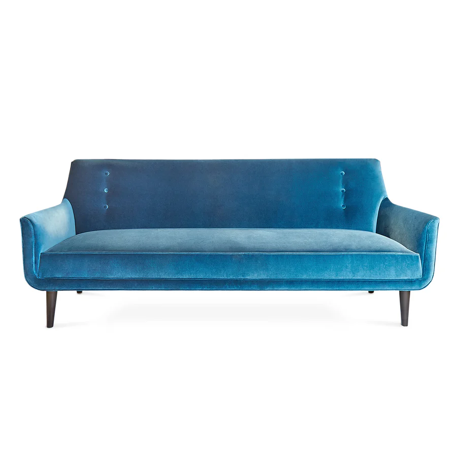
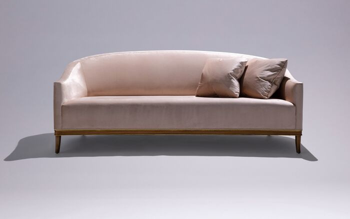
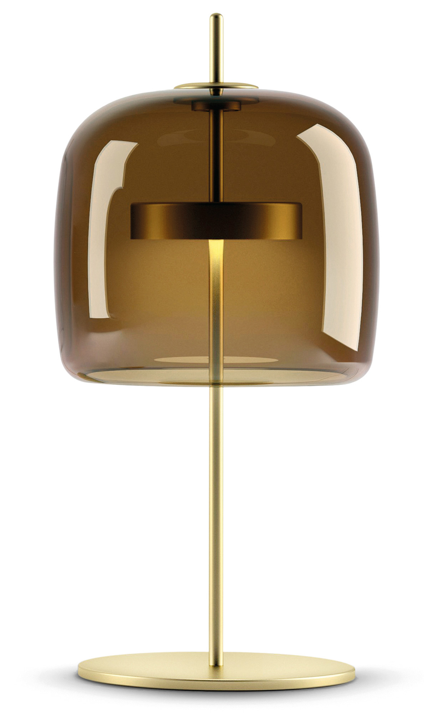
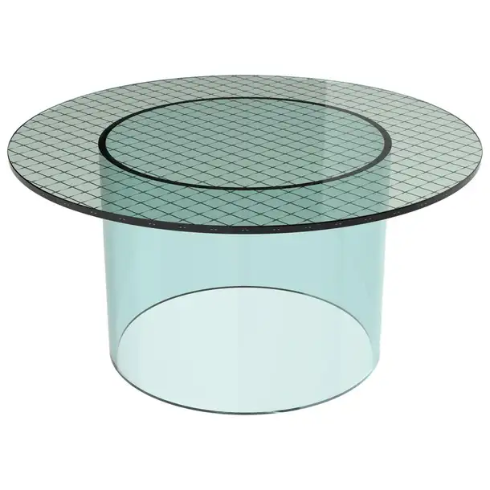
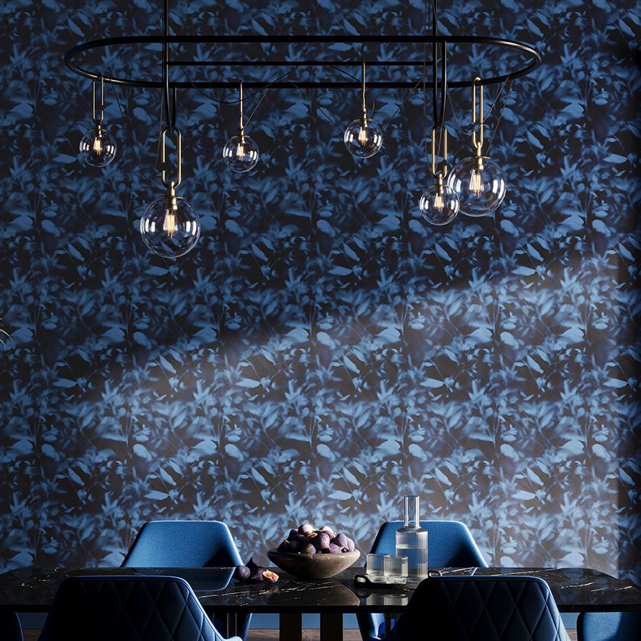
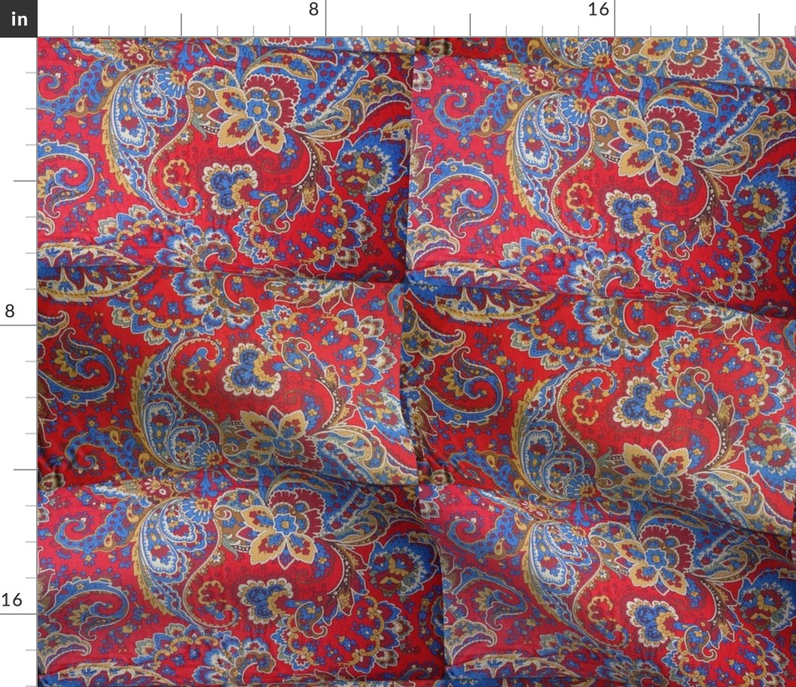
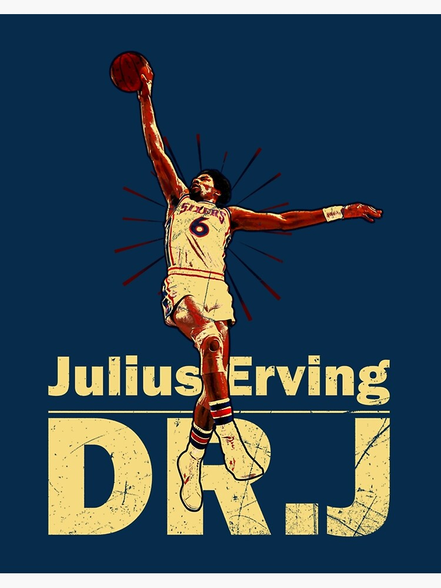
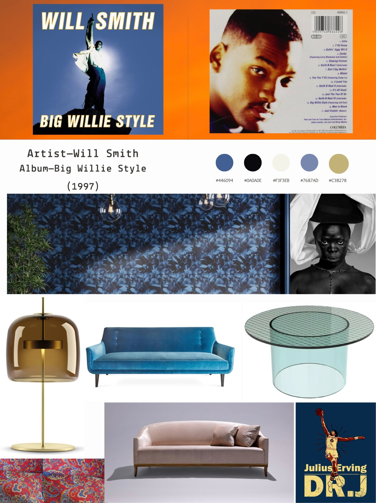

Big Willie Style
In honor of Black Music Month and the release of Bad Boys: Ride or Die, Chris from West Philly requested that we give the Albums as Interiors treatment to 1997’s Big Willie Style by none other than the Fresh Prince himself, Will Smith.
I don’t know about you and your ministry, but “Gettin’ Jiggy Wit It” went quadruple platinum in my household.

Released in 1997, Big Willie Style was the soundtrack to a good time. From the infectious energy of “Miami” to the smooth, laid-back groove of “Just the Two of Us,” the album was playful, polished and unapologetically celebratory. For our interior interpretation, we wanted to capture some of that same personality while creating a space that felt sophisticated, comfortable and inviting.

Taking our color cues from the album’s cover art, we leaned into various shades of blue, punctuated by creamy neutrals, muted gold and touches of black. We anchored the room with the elegant Mrs. Godfrey sofa in Venice Peacock, complemented by the softly curved Palais sofa from Gregorius Pineo. The contrast between the two gives the space a lovely balance of richness and softness.


A smoked-glass lamp introduces a little warmth and glamour, while a translucent glass table brings an unexpected contemporary element to the room. The patterned blue wallpaper creates depth and provides a striking backdrop for the photography of South African visual artist Zanele Muholi.



Of course, we couldn’t design a living room worthy of the freshest of princes without incorporating a bit of Bel-Air Academy paisley, repurposed here for throw pillows. And in another nod to Philly, we included artwork celebrating Sixers legend Julius “Dr. J” Erving, inspired by the iconic Kent Twitchell mural that has graced Ridge Avenue since 1990.


The result is a living space with a sense of humor, a little nostalgia and plenty of style. Somewhere to kick back, put on a record and enjoy the good life.

Let me know your thoughts. And if you’d like to see a room inspired by your favorite album please reach out directly to I Spaced Out with suggestions.
Credits:
- Album artwork: Columbia Records
- Mrs. Godfrey sofa: Burke Decor
- Palais sofa: Gregorius Pineo
- Lamp: Lightology
- Table: 1stDibs
- Wallpaper: Innovations USA
- Photography: Zanele Muholi (@muholizanele)
- Dr. J artwork: Sourced via Etsy (artist unidentified)
Design inspiration: Dr. J (Julius Erving) mural by Kent Twitchell, Mural Arts Philadelphia.